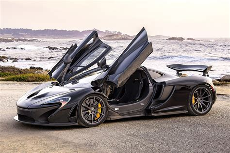
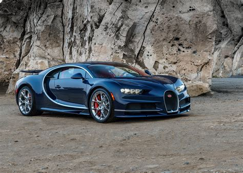
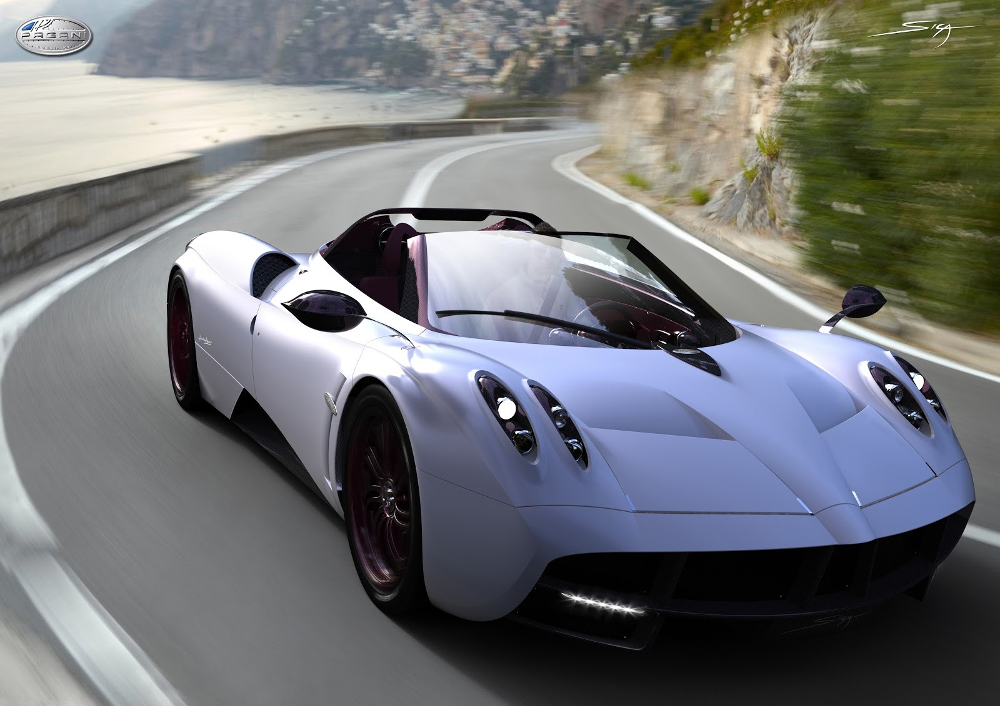

車款介紹
- LaFerrari
- p1 
- 918 Spyder
- Aventador LP 700-4
- Chiron 
- Huayra 
車名：LaFerrari
價格：7000-8000 萬
發動機： 6.2 升 V12 自然進氣引擎
馬力： 963 匹
0-100：3 秒內
0-200：7 秒內
輛數：499台
最大扭力：900 Nm
生產：法拉利
車名：p1
價格：100萬英鎊
發動機：3.8L雙渦輪增壓V8汽油發動機
馬力：916匹
0-100：2.8秒
0-200：6.8秒
輛數：375
最大扭力：979 Nm
生產：麥拉倫

車名：918 Spyder
價格：92.9萬美元
發動機：4.6公升V8缸自然進氣引擎
馬力：887匹
0-100：2.8秒
0-200：7.0秒
輛數：918
最大扭力：1,280 Nm
生產：保時捷

車名：Aventador LP 700-4
價格：379,700美元
發動機：L539 60°夾角V型12缸自然進氣引擎
馬力：700 匹
輛數：4000輛
最大扭力：690 Nm
生產：藍寶堅尼
車名：Chiron
價格：兩百四十萬歐元
發動機：8.0 L（488 cu in） W16 四渦輪增壓引擎
馬力：1,500匹
0-100：2.4
0-200：6.1
輛數：500台
最大扭力：1,600 Nm
生產：Bugatti
車名：Huayra
價格：85萬歐元
發動機：雙渦輪增壓，V12引擎
馬力：730匹
輛數：100台
最大扭力：1,000 Nm
生產：Pagani